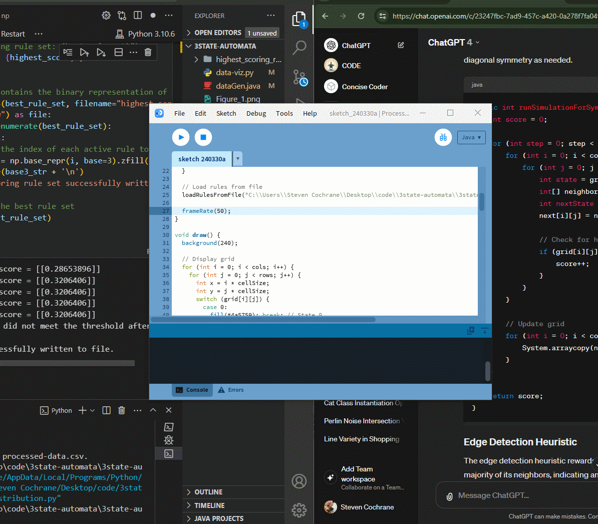
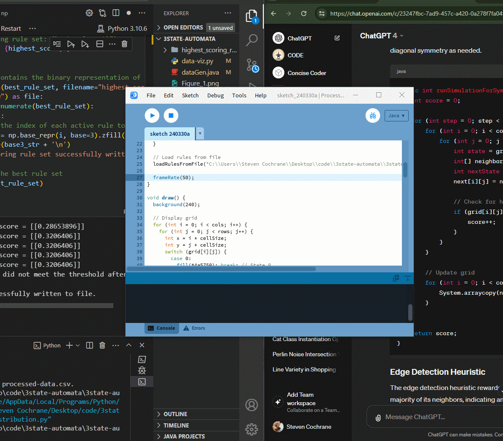

Exploration of 3-State Cellular Automaton
Project Start and Data Collection
The project began with the creation of a 3-state cellular automaton, quickly confronting the vast number of rule possibilities, in the order of 3^2187. Recognizing the impracticality of manual analysis due to the predominance of noise, an automated approach was adopted. After developing a way to encode my states and rules into different counting systems (base n where n is the number of states), a Java application was developed for mass data collection, simulating thousands of rule sets with a heuristic to discern patterns of behavior. Initial data analysis revealed two distinct groups based on the stability of patterns, guiding the next steps of the investigation.
Data Analysis and Examples
Below are examples of stable structures observed in the simulations, showcasing the complexity and beauty of patterns that can emerge from simple rules. In the GitHub Repository there are more example rule sets.
 


Analysis, Neural Network Integration, and Outcomes
Data encoding and optimization were crucial for making the dataset manageable and intelligible for neural network analysis. Following data normalization and careful selection of neural network architecture tailored to our data features, the network was trained to identify rule sets leading to stable structures. Despite efforts, creating effective rules based on neural network outputs proved challenging due to inherent limitations in capturing specific rule restrictions. The network was instead used to evaluate hundreds of rule sets, assigning scores to gauge stability. While achieving scores above .45 was rare, a significant concentration of scores around 0.8 was noted in our data analysis, presenting an elusive high-score group amidst a vast possibility space.
Simulation and Exploration on This Page
The simulation running on this page uses a subset of 100 out of the possible 243 rules to avoid overwhelming chaos, allowing for clearer observation of emergent patterns. Notably, these simulations are less chaotic than those used in our examples, which all have over 200 rules. Clicking the "Restart" button reinitializes the board with new rules and random states for each cell, enabling exploration of the wide array of possibilities within a more controlled chaos.